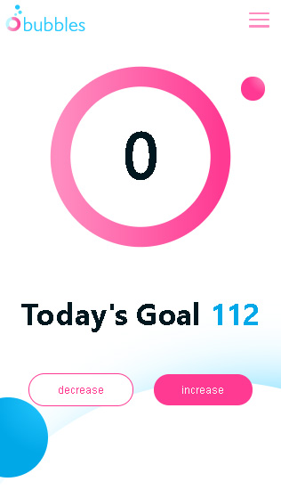

Logo
The bubbles app needed to have a sense of playfulness the vibrant colors helped to create.
Web
Bubbles is a water tracking app built for Pilates Boutique. The idea was to create an enjoyable experience to a rather mundane task. Tracking your water intake each day can be a pain so the idea was to simplify the user experience by letting users set a water bottle size. This allowed them to updated their intake with one click. All the interactions on the app are enhanced with short animations that allow the app to be a fun experience.
CSS Animations for a More Pleasant User Experience
The short animated transitions between pages creates a fluid experience and eliminates the abrupt break traditionally found on the web. Tracking your water intake also animates the progress circle by a percentage of the amount left to hydrate for the day. And, once you've reached your goal for the day animated bubbles float up from the bottom of the screen. The hope with designing the app with animations in mind helped to create a pleasant user experience that makes the app fun to use.

With Great Power Comes Great Responsibility
It can be easy to animate too many things! CSS animations are so easy to use that as a developer and designer restraint needs to be a priority. Animating between views can look great, but if your transitions are lasting even half a second, it becomes a frustrating experience for the user. Sure that first time may look cool, but after visiting the page 5 times a day (which the users would do as they track their water intake throughout the day) it would become maddening.